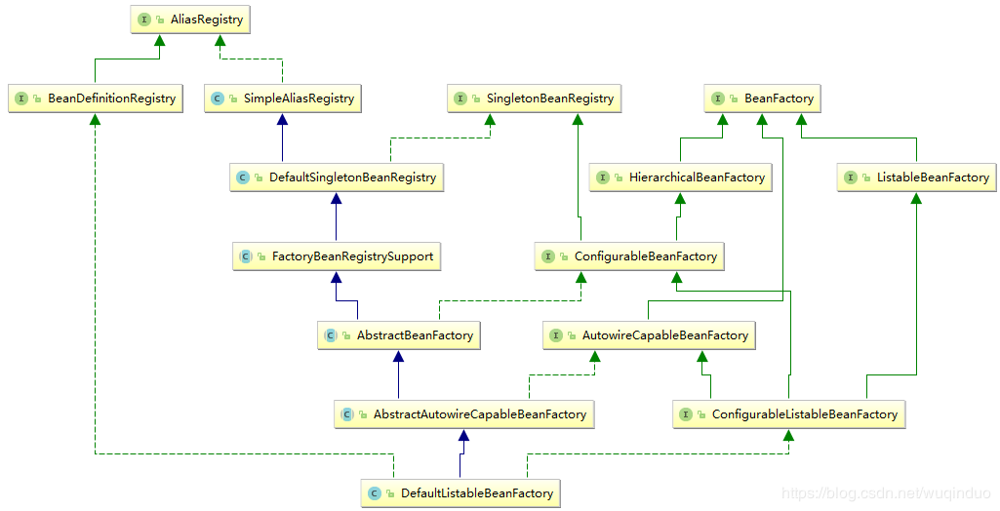

@(spring源码分析系列3:核心容器的研究)
在讲容器之前，再明确一下知识点。
- BeanDefinition是Bean在容器的描述。BeanDefinition与Bean不是一个东西。
- Bean是根据BeanDefinition创建出来的。也即是我们所说的对象。
BeanDefinition物料需要有地方存储，Bean成品需要有地方存。今天我们讲讲仓库。
BeanFactory家族

此图是默认容器DefaultListableBeanFactory的继承,实现关系图.我们从右向左来分析下.
- BeanFactory接口：
容器顶级接口，提供了容器最基本的能力，包括获取bean,是否包含bean,是否单例，获取bean类型，Bean的别名等方法。
- ListableBeanFactory接口：
BeanFactory的子接口；具有批量获取Bean的能力
- HierarchicalBeanFactory接口：具有访问父容器的能力。有层次的BeanFactory。
- AutowireCapableBeanFactory接口：继承BeanFactory，扩展了自动装配能力。这个接口更多的作用是用于于与其他框架集成，把不在spring容器中的Bean加入到Spring容器生命周期管理中来。此接口很少用
- ConfigurableBeanFactory：定义了BeanFactory的配置。继承HierarchicalBeanFactory和SingletonBeanRegistry接口。实现了此接口的容器，具有层次，单例BeanDefinition注册功能。
ConfigurableListableBeanFactory：
大融合接口，除了具有上述接口的能外，还具有:类加载器,类型转化,属性编辑器,BeanPostProcessor,作用域,bean定义,处理bean依赖关系, bean销毁等功能。
SingletonBeanRegistry接口: 具有Bean的操作能力.注册,查询,获取Bean数量等能力. 注意此处的Bean是实例.区别于BeanDefinition.
SimpleAliasRegistry:Bean的别名操作类,实现了AliasRegistry.具有存储Bean别名,注册Bean别名,获取Bean别名的功能.aliasMap属性存储Bean别名
- DefaultSingletonBeanRegistry:除了继承了SimpleAliasRegistry的功能外. 最重要的是实现了SingletonBeanRegistry接口.具有存储Bean实例,注册Bean,获取Bean的能力.我们定义的被Spring管理的Class类的实例对象,以及实例的之间的相互依赖关系都是存储在此类中.默认常用的容器DefaultListableBeanFactory的Bean的相关能力.就是通过间接继承此类来实现的.
/** Disposable bean instances: bean name --> disposable instance */
private final Map<String, Object> disposableBeans = new LinkedHashMap<String, Object>();
/** Map between containing bean names: bean name --> Set of bean names that the bean contains */
private final Map<String, Set<String>> containedBeanMap = new ConcurrentHashMap<String, Set<String>>(16);
/** Map between dependent bean names: bean name --> Set of dependent bean names */
private final Map<String, Set<String>> dependentBeanMap = new ConcurrentHashMap<String, Set<String>>(64);
/** Map between depending bean names: bean name --> Set of bean names for the bean's dependencies */
private final Map<String, Set<String>> dependenciesForBeanMap = new ConcurrentHashMap<String, Set<String>>(64)
- FactoryBeanRegistrySupport: 提供多工厂Bean的支持.FactoryBean通过其名字我也可以看出是生产Bean的Bean.
- AbstractBeanFactory抽象类: 承上启下.从图中我们看出. AbstractBeanFactory.通过继承关系,继承FactoryBeanRegistrySupport各种能力.而且实现了右边部分接口.已然是比较完备的Bean容器了.AbstractBeanFactory还通过模板模式定义了获取Bean的算法骨架,
- AbstractAutowireCapableBeanFactory: .具有大部分的能力. 实现了AbstractBeanFactory定义的模板方法.其中doCreateBean方法逻辑是把一个BeanDefinition变成Bean的过程.这个方法非常重要.通常我们使用类创建对象.直接new出来. spring把BeanDefinition到Bean的过程模板化,留下了很多扩展点. 留给使用者可以在不同的时刻自定义BeanDefition创建Bean的过程.
- DefaultListableBeanFactory常用的默认容器实现,也是spring最常使用的容器类.看左边DefaultListableBeanFactory实现了BeanDefinitionRegistry接口. 这说明什么?说明DefaultListableBeanFactory具有存储BeanDefinition,操作BeanDefinition的能力.DefaultListableBeanFactory通过继承关系也具有了Bean的存储操作功能.
小结:
- BeanFactory体系，接口分明，完美的体现了接口分离原则。
- BeanFactory体系中有两种存储,一种是BeanDefinition的存储,另一个是Bean的存储.
- DefaultListableBeanFactory作为最常用的容器类.不但具有BeanDefinition的存储操作功能,而且通过继承具有Bean的存储操作功能.DefaultListableBeanFactory把存储的BeanDefinition通过一定算法创建Bean并存储起来.
BeanDefinition,BeanFactory,Bean三者关系
通过上面的对各个接口,类的认识.我们再来看看三者的关系.
我们向BeanFactory容器中注入一个BeanDefinition。BeanFactory帮我们存储起来.当我们想要得到一个Bean时.BeanFactory 帮我们把BeanDefinition创建Bean.并缓存起来.这个创建过程是可参与的.
- BeanFactory保存了BeanDefiniton与Bean.
- BeanFactory具有使用BeanDefinition创建Bean的功能
- BeanFactory允许使用者可以干预BeanDefinition生成Bean的功能.
BeanFactory中的扩展点
设计原则之开闭原则说的特别好：说一个软件实体应该通过扩展来实现变化.
很多优秀的框架都有类似的扩展点设计,列如:
- Tomcat中的Filter
- Tomcat中的pipline-valve
- springmvc中的Interceptor
BeanFactory中从BeanDefinition到Bean并不是一下子就完成的.这有一个过程.spring正是在这个过程中留下扩展点.来实现BeanDefinition到Bean的过程中的各种自定义变化.
从上面我们得知:AbstractAutowireCapableBeanFactory中有个doCreateBean()正是BeanDefinition到Bean的创建方法.接下来我们看看这个方法.有哪些扩展点:
- xxxAware接口:使Bean可以获得xxx. 列如实现了BeanFactoryAware接口的类，可以在该Bean被加载的过程中获取加载该Bean的BeanFactory
- BeanPostProcessor:BeanPostProcessor接口定义的两个方法，分别在bean的初始化方法（InitializingBean接口，或者init-method定义）执行的前后执行
- InitializingBean接口: 实现了InitializingBean接口的类,执行afterPropertiesSet
- 自定义的init-method方法:
总结:
BeanFactory是物料与成品仓库，并配生产线，把BeanDefinition生产成Bean 。BeanFactory留下很多扩展点, 方便开发人员可以参与BeanDefinition到Bean的创建过程.
欢迎大家关注我的公众号【源码行动】，最新个人理解及时奉送。